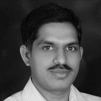

Meda Ravi Chandra Sekhar - Founder - Message
 Quality education to all, especially for children in Rural places of Telangana, is our motto.
Children should be given due importance to their mood, ability and age. Instead there is a lot of commotion going around private costly education and government's free school education, parents high ambitions forcing on children, rat race to children in the name competition,
too much of homeworks to retrace guides into notebooks and lot more burned is put on child than a child can handle. Our drive is to Enhance learning by Integrating theory and practice.
We focus on Quality Education in regions where it is needed and wherever it is ignored. Villages are running short of teachers, forget about skilled teachers. Poor parents are busy all day to earn their livelihood, rich farmers of this generation are busy increasing their assets, attention to essentail education to their child is ignored. While there are some private schools in the villages, though committed, they could not prepare themselves to catch up with changing education needs.
All developments and innovations in different fields, including education, are focused only in urban area. Villages never caught up with urban trends of education and there is an increasing gap day by day. Man and Technology reached Mars but education could not reach villages. So, need of the hour is to providing quality education from other end of the civilization .
Challenges in our Journey
While there high aspirations to transform rural child education, multitude of challenges too are haunting. One challenge is to educate and convince parents for need to get away from traditional methods of education. Second challenge is that no one is prefering to be a teacher. Graduates in villages are very happy to do a labour work and its pay than being a teacher. Third challenge is that the villages are less densily populated and transportation has become expensive, so overall cost of private education is too high than in Cities. Villages being less densily populated regions and fees being very much bargained and under paid, revenue generated from fees is not meeting to pay the salaries of teachers, fund high cost infrastrure and Government's sky-reaching standards and rock bottom reality giving opportunists to exploit situation from different sections. All these challenges are standing in the way to Right to Quality Education to Rural Children.
Approach
We have designed revolutionary methods of teaching not only to overcome the challenges but also to challenge traditional education methods. In the fast changing world, teaching fixed academic syllabus and forcing children to rote learning is not going to help children survive in their future.
Here is our approach to impart education quality education that is tested and proven, reaping results.
- Langugage Development Skills
- Mother Tounge . Give enough time to child to learn the letters of mother tounge, help them to master to read native language. Once they are through with the language, provide enough story and other books by age and that develops interest in the child.
- English is now a global language, it is undeniable fact that learning English is essential language. We teach English in the same manner as native language. Teach letters, phonetics, and teach them to read English fluently. Teach them to develop their vocabulary. Teach them right reading skills. Then facilitate children with numerous story books for each age group. Child now being familiar with reading books in mother tounge, it will become easy for children to read and comprehend books in English language too. To develop speaking skills in English, provide tools to listen to English Langugage.
- Faciliate children to learn third language and other essential languages
- Logical Skills Provide them logical skills. Give them time and worksheets to understand concepts of basic arthematic operations.
- Life Skills, Learn by doing Engage child in application of concepts learned in the class. Engage them in their daily chores. Give more time to practice life skills like public speaking etc,
- Focus on primary education, so that students and continue higher education in Government High schools. Because student is fully prepared to read, learn by self and get the ability to question difficult topics. There by overall cost of education to the family comes down drastically.
- We give least priority to class room teaching, rather we engage children to participate in dicussions help each other to understand the concepts. Teacher will facilitate student with required tools and fill the knowlege gaps
All this happens under the regular supervision of experts from different fields in the industry. In that manner, prepare child ready for market and future as against disconnected studies of today's traditional education in rural India.
Our AIM is to impart education that makes child far higher successful to urban, corporate and internnational schools education in most simplified form and format.
Vision and Mission
Our aim is to impart quality education to rural child. Our vision to nurture self-organized visionary leaders. Our Mission is to spread the practical methodology of teaching which is less of teacher intensive and more of child friendly and importance of teaching "how to learn". Encourage each one teach one. Collaborate children to learn and rise together.